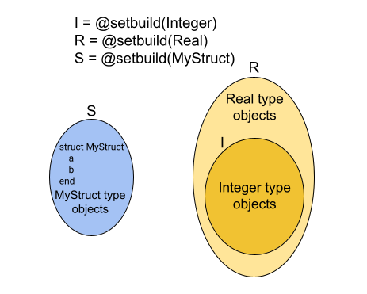
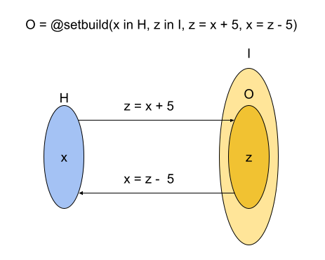

Set Creation
The @setbuild macro in SetBuilders is the primary interface for creating sets.
With this macro, users can create sets from Julia types, predicates, mappings, and lists of elements.
Empty Set and Universal Set
Let's start with the simplest ones: the empty set and the universal set.
E = @setbuild() # Empty set
U = @setbuild(Any) # Universal set
@assert !(1 in E) # No elements in EmptySet
@assert 1 in U # Any element is a member of UniversalSetWith no argument, @setbuild creates an empty set, which does not contain any elements. All membership tests with EmptySet returns Boolean false.
All @assert tests in the examples of this page should pass.
In Julia, the Any type is a special type that sits at the top of the type hierarchy. With the Any type, @setbuild creates the universal set, which includes all objects in Julia. All membership tests with UniversalSet returns Boolean true.
Set from Julia Types
With Jula type, @setbuild creates a set that includes all instances of that type.
I = @setbuild(Integer)
@assert 1 in I # 1 is one instance of an Integer subtype
@assert !(1.0 in I) # 1.0 is one instance of a Real subtype, not an Integer subtypeThe set I includes instances of all subtypes of Integer (BigInt, Int128, Int16, Int32, Int64, Int8, UInt128, UInt16, UInt32, UInt64, UInt8, and Bool).
Please note that the set I "conceptually includes" such elements, but does not actually "contain" them. The membership evaluation is performed "lazily" at the time of checking.
R = @setbuild(Real)
@assert 1.0 in R # 1 is one instance of a Real subtype
@assert !(1.0im in R) # 1.0im is one instance of a Complex type, not a Real subtypeSimilarly, the set R includes all instances of all subtypes of the Real type, encompassing all subtypes of Integer, AbstractFloat, AbstractIrrational, and Rational types.
struct MyStruct
a
b
end
S = @setbuild(MyStruct)
@assert MyStruct(1,2) in S # MyStruct(1,2) is one instance of a MyStruct type
@assert !(1 in S) # 1 is not an instance of MyStruct typeNote also that @setbuild can create sets from user-defined types. The set S includes all instances of the MyStruct type.
The following diagram depicts the three sets in the above example.

Enumerable Set
Similar to Julia's Set data structure, @setbuild can create a set from a list of elements.
The brackets([ and ] in the first @setbuild argument directs to build an enumerable set.
A = @setbuild([1, 2, 3])
@assert 1 in A # 1 is one of the elements of set A
@assert !(4 in A) # 4 is not an element of set AThe set A in the above example is created with three elements.
Note that the Setbuilders Enumerable Set actually 'contains' the elements in the same way as the Set data structure in Julia.
value = 10
B = @setbuild(Int64[value, 2])
@assert value in B # `value` defined outside of `@setbuild` is used
@assert !(Int32(value) in B) # Set B can contain `Int64` type, not `Int32`
@assert !(3 in B) # 3 is not an element of set B
push!(B, 3) # 3 is added into set B
@assert 3 in B # Now, 3 is a member of set B
pop!(B, 3) # 3 is removed from set B
@assert !(3 in B) # 3 is not a member of set BUsers can specify the type of elements, as shown in the set B. There is one difference in handling the type of elements compared to Julia's Set. When an element is "pushed" into the set, SetBuilder enumerable sets do not promote the element's type, whereas Julia Set does.
The above example demonstrates how to add and remove an element to/from an EnumerableSet using the push! and pop! functions, similar to the Set in Julia.
C = @setbuild(Dict{String, String}[])
d1 = Dict{String, String}("a" => "x")
d2 = Dict{String, Integer}("a" => 1)
@assert !(d1 in C) # d1 is not a member of set C
push!(C, d1) # d1 is added to set C
@assert d1 in C # d1 is a member of set C
push!(C, d2) # d2 can not be "pushed" to set C, due to type-mismatch
ERROR: push! failed due to element type mismatch: Dict{String, Integer} not in
ataType[Dict{String, String}].
@assert !(d2 in C) # d2 is not a member of set CEnumerableSet can accept instances of all Julia types as a member. Set C in the above example accepts a dictionary data structure with String key and String value. Note that the square brackets in the @setbuild arguement indicates for creation of an EnumerableSet.
Cartesian Product Set
In some cases, we may want to create a set by selecting elements from each set and arranging the chosen elements in order, known as the Cartesian product.
D = @setbuild((I, I))The set D includes all pairs of elements from the set I, previously defined in the example above as a set of Julia Integer type.
F = @setbuild((x, y) in I)The set F offers another syntax for creating a set of Integer pairs, similar to the set D.
G = @setbuild((I^3, z in I))The set G demonstrates another syntax for creating a Cartesian product set with the 4-ary Cartesian product set.
Predicate Set
Predicates are logical formulas that yield true for set members. In SetBuilders, predicates can be any expressions yielding a Boolean result, including functions.
H = @setbuild(x in I, 0 <= x < 10)
@assert 0 in H
@assert !(10 in H)The set H in the above example has two arguments. The first argument defines the domain of the sets. In other words, all members of the set H should also be members of the set I, defined as an Integer set. Additionally, all members of these sets should satisfy the Boolean expression of the second argument.
The following diagram depicts the relation between the domain set I and the predicate set H.

K = @setbuild((x in H, y in J), x < 5 && y > 10)The set K demonstrates how to define the domain of a set using multiple sets.
L = @setbuild((x in H, y in J), c1*x + c2*y > 0, c1=-1, c2=1)The set L shows how to use values defined outside of the @setbuild macro.
N = @setbuild(x in @setbuild(Real), x > 0)The set N illustrates that the @setbuild macro can be nested within another @setbuild macro.
Mapped Set
With a Mapped Set, users can create a set using mappings from one set to another.
O = @setbuild(x in H, z in I, z = x + 5, x = z - 5)A "Mapped Set" should have at least four arguments.
The first argument defines the source set, or domain in mathematical term, of a mapping. The mapping starts from the elements of the set H.
The second argument defines the destination set , or codomain, of a mapping. The mapping arrives at the elements of the set I.
The third argument defines a "forward" mapping from the source set (H, domain) to the destination set (I, codomain). The mapping at the third argument defines the way how to generated an element(or elements) in the codomain.
The fourth argument defines a "backward" mapping from the destination set (I, codomain) to the source set (H, domain). The mapping at the fourth argument defines the way how to generated an element(or elements) in the domain.

function myfunc(x)
x - 5
end
P = @setbuild(x in J, z in I, z = x + 5, x = func(z), func=myfunc)The set P demonstrates how to use a function defined outside of @setbuild to create a mapping.
Q = @setbuild((x in H, y in J), z in S, z = mystruct(x, y),
(x, y) = (z.a, z.b), mystruct=MyStruct)The set Q shows that a mapped set can map to a user-defined type.